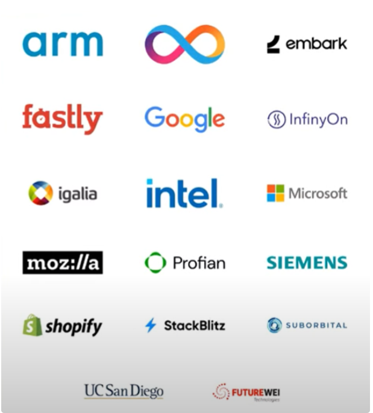
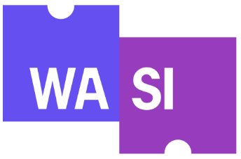
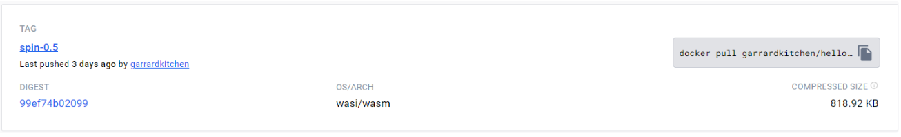
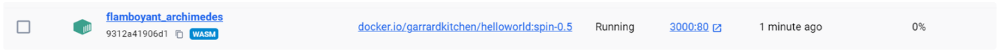

The 3rd Wave of Cloud Computing
February 5, 2024 - 10 mins read time - 2051 words - garrardkitchen
That’s quite an opening statement, isn’t it?
As a reminder, the 1st and 2nd waves were Virtual Machines and Containers, respectively.
Warning, profound statement inbound…
The Docker cofounder, Solomon Hykes, said this in 2019
“If WASM+WASI existed in 2008, we wouldn’t have needed to create Docker. That’s how important it is. WebAssembly on the server is the future of computing.” - Quote
I think we need to let this sink in for a few moments. IMO, this is huge. Personally, since 2016, most of my DevOps [development & orchestration] work has involved containers. Container and FaaS is my preferred approach to development and orchestration. But now there’s a new way? Will I now have to throw out all this knowledge and return to ground zero and start over? In short, no. Anyways, back to this 3rd wave…
WebAssembly (or WASM for short) is now considered to be the 3rd wave. I will cover what both WASM and WASI are. Before I do, I first want to put your mind at rest (and my own!). This post will not be leading to a conclusion were this technology will replace containers. Far from it. After all, did containers replace VMs? No, they didn’t. Neither will I be suggesting we have to migrate all our existing container-based solutions to this new shiny, WASM. Reassured? Good, let’s move on.
What is WASM?
So then, what is WASM? WebAssembly (or WASM) is a binary instruction format (Bytecode) that is designed to be a portable target for the compilation of high-level languages like JavaScript, C/C++, Rust, Python and .NET, enabling deployment on the web for either client or server applications. To run a WASM application you also require a WASM runtime.
WASM isn’t a new technology either. It’s been around for several years and if you’ve had any exposure to the .NET ecosystem then you’ll most likely be aware of Blazor. However, all that Blazor is, is JavaScript running in a NodeJS console application with very little association to the wider WASM eco-system. For example, you could not take a compiled application module from Blazor and deploy them to Docker or Kubernetes. However, with .NET 8.0 there is the wasi-experimental workload that you can use in conjunction with the wasi-sdk and CLang. But as the name suggests, this is experimental and both specifications as well as the tooling are likely to change. I’m including this here to show that there is some WASM 💖 being given to .NET.
What many of you (including myself up until a few months ago) may not be been aware of is that WASM can run outside of the browser (OOB) too; on a server. This is the very reason why I wanted to create this blog. This, and to make you aware of how profoundly this technology will impact how we will develop, and platform, our future applications.
WASM by design is sandboxed. This is intentional. So, what does this mean? It means it can’t directly access resources on the host machine. It can only perform actions that it’s allowed to do within that sandbox. This is rigorously enforced. It can do one of two things. Let’s call these capabilities instead of “things”, after all, we’re all grown-ups? It’s first capability is it can only perform operations on its own memory. This by design is purposely constraining so for it to be of any real use it has to offer up a method of allowing I/O with its host. And this is its second capability so making it possible to interact with its host. This is made possible using Import & export functions. Export functions allow the host to call into a WASM application. Conversely, Import functions allows the WASM application to call into the Host. This second capability is where a new technology comes into play - WASI. Which leads us nicely into what else is needed…
What else is needed?
Now that we have touched on the second capability or Import & Export functions, we may now want to think about where these might sit as well as why do we need these.
For example, you may want to access the host’s filesystem (or what the host would like you to think is its filesystem) or to read the system clock. Infact there are a range of resources your WASM application may want to access from its host. This access will need to be performed irrespective of what O/S you’re on, or what its instruction set is. This range of access is known as the API. To help in the development of this API and to ensure there’s an associated standard, the Bytecode Alliance was formed and became responsible for driving this forward. The Bytecode Alliance consists of an alliance of many organisations, as seen here:

List of all the companies that form the Bytecode Alliance
What is being developed is a specification that is a standardized system interface for WASM that enables it to interact with the underlying operating system in a secure and platform independent manner.

The WASI logo
This is known as WASI (Web Assembly Standard Interface). WASI provides a single standard way to call the low-level functions that are present on any platform, making it easier to write software once and run it anywhere.
⚠️ WASI specifically relates to running WASM on a server and has nothing to do with running WASM in the browser.
There’s an important point to make known and this is, just because the spec says you can access the host’s filesystem, by default, you can’t. The host must first allow you to access it’s filesystem. This ensures that the sandbox remains rigorously enforced.
So, we have the application that has been compiled into WASM bytecode, and we need to use the WASI API to be able to access the host’s resources. But we also need something to actually run the WASM application on the host. This is known as the WASM runtime and there are several runtimes available. The runtimes available from the Bytecode Alliance are wasmtime and WAMR. wasmtime is a high-performance runtime for the server. WAMR targets more resource constrained scenarios such as IoT. The runtime that I have been using recently is wasmtime. This, however, is abstracted away from me through the toolchain. I have been using the spin toolchain from Fermyon.
What are the benefits?
So far, I’ve described what WASM is, what it needs to offer up any real value as well as how it gets executed on the host. What I am yet to touch on is why anybody should invest their time in this technology. Let’s address this now by highlighting the main benefits of WASM.
WASM’s benefits aren’t too dissimilar to those of containerization. Here’s the list:
- It has near native performance without sacrificing safety.
- It supports multiple programming languages including emerging languages like Rust.
- If a WASM application crashes, it will not bring down anything else running on that same machine.
- It has a smaller attack surface and a simpler software supply chain than Linux containers.
- There’s no possibility of malicious data leaks or the exfiltration of data.
- It is ideal for serverless use-cases and those event-based scenario; once run, then it can scale to zero.
- It is more portable than containers as the same WASM Bytecode works the same across every machine so therefore it is architectural independent.
- It’s very light weight, more so than docker. An application can be as small as a few KBs. In comparison, each of your docker processes are effectively running it’s own O/S. An example size can be seen here:

Image as shown in DockerHub, confirming OS & Architecture as WASI & WASM
There is other functionality that is planned. For example, in the next 12 months we will likely see greater emphasis made around the component model. The component model is a way to define and compose WASM modules so that they can interact with each other, and the host environment. This will enable WASM modules to be reusable, portable, secure, and efficient across different platforms and fulfil a richer set of use cases.
Why is this interesting?
For me, somebody who has a genuine passion for Sustainability, and in particular, Sustainability Transformation, it’s speaks to me at a GSF principle level - Energy Efficiency in particular. Meaning that we must aim to use as little as energy as possible, essentially getting the most out of each unit of energy. I feel that this 3rd wave is a perfect fit for this principle. This is providing that the bin packing/right-sizing capability of the hosts is maximized, otherwise it’s just another application rattlingly around in the server that by default will always use a set amount of energy and emit a set amount of carbon.
As an FYI, I gave a talk on Sustainability Transformation during our Fujitsu PROSummit as well as at the National DevOps Conference in October in a Breakout session with a colleague. All talks I give will have an aspect of sustainability associated with them.
What also reignited my interest in WASM was when I researched WASM with my fellow Professions colleagues. This was at the request of our CDO and to produce an executive summary a few months back. Since, I’ve continued my research in this area, even writing some C code which I’ve not done since 1995! This code can also be found in another public GH repo of mine.
How easy is running a WASM application on a server?
I’ve experience of using a few toolchains in this area. The toolchain I’m using presently comes from Fermyon and this is called spin. I’ve a GitHub code repository here https://github.com/garrardkitchen/docker-wasm-spin that, if you’re interested, will get you up and running in a few minutes. If you know me or have seen any of my talks on the Professions platform, you’ll know I always accompany a talk with a GitHub code repository. Fermyon also have a cloud offering that you can deploy directly to. You can also deploy your WASM application to your own Kubernetes cluster. My code repository covers running a spin WASM application on Docker for Desktop and it is a TypeScript HTTP Trigger taken directly from a spin template. The instructions to build, run and deploy are in the README
Here’s a picture of my running container on Docker for Desktop (see the WASM tag):

Showing a WASM container running on Docker for Desktop
An engineer coding a serverless function in WASM
My sample code is ultra basic and all it does is run an HTTP listener. You could add a KV store or Db connection to extend this example to make it more realistic.
One fun activity you could participate in is to review some of the Azure Functions or AWS Lambdas or GCP Cloud Functions you have recently written and assess which of these could have been done in WASM?
You could even go one step farther and rewrite one of these in WASM then share the link in the Comment section below. I would genuinely love to see this!
The OSS community
I did hit a problem when I first dipped my toe into spin, that the good people from the Fermyon community in Discord helped me with. I do make a point of reaching out to the community of any open-source project I am looking into, and I use this as a barometer as to the quality and longevity of their product. I have to say, they didn’t disappoint. Several members helped me, including their CEO!
In Summary
In summary, WASM on the server is important for developing modern, secure, and efficient applications that can run closer to the data and the users. It is especially useful for microservices, edge computing and cloud-native computing.
I do hope you have found this article interesting and seen how uncomplicated it is to deploy having cloned my GitHub code repository. I also hope this has piqued your interest to the point that you’re already started exploring this fascinating ecosystem. It’s an area of cloud computing that I’m excited about and looking forward to it being mainstream. It is clear to see that WASM/WASI will be a cloud disruptor, and that a delivery cycle involving this technology can be ridiculously short, not to mention energy efficient.